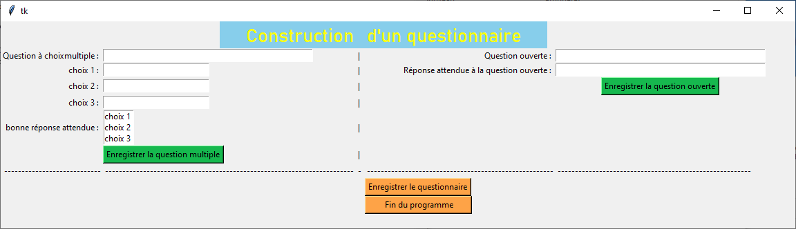

Assurez-vous que la première ligne de votre fichier contient #!/usr/bin/env python.
Rendez-le exécutable - chmod +x
Et l'exécuter comme ./
Installez Python 3, et installez aussi IDLE qui est fourni avec (il s'agit d'un logiciel qui vous permettra d'écrire du code Python et de l'exécuter).
Faites Clique Droit avec le bouton de la souris sur le fichier que vous voulez lancer. Puis aller dans Python > IDLE.
Une fois l'IDLE lancé, appuyer sur la touche F5 de votre clavier.
Vous pouvez aussi passer par exécuter > exécuter Module ou Run > Run Module.
L'interface graphique pour la création du questionnaire en python est la suivante :
NOTE IMPORTANTE : Il est tout à fait possible de mélanger les questions à choix multiple et à choix ouvert au sein d'un même questionnaire.
① A remplir par la question que vous souhaitez poser.
② A remplir par les réponses que vous souhaitez mettre.
③ A cette endroit, on indique où est la bonne réponse.
④ Bouton qui permet d'enregistrer la question.
⑤ Bouton qui permet d'enregistrer le questionnaire une fois que toutes les questions ont été faites.
Pour créer une nouvelle question, répéter les opérations. ① à ⑤
⑥ Bouton qui permet d'enregistrer le questionnaire en entier.
① A remplir par la question que vous souhaitez poser.
② A remplir par les réponses que vous souhaitez mettre.
ATTENTION : l'ensemble des réponses doit être avec la bonne orthographe et à écrire en minuscule.
③ Bouton qui permet d'enregistrer la question.
④ Bouton qui permet d'enregistrer le questionnaire une fois que toutes les questions ont été faites.
Pour créer une nouvelle question, répéter les opérations. ① à ④
⑤ Bouton qui permet d'enregistrer le questionnaire en entier.
Afin de pouvoir répondre au questionnaire, nous allons nous servir des fichiers JSON créés par le Module Python.
Si vous cliquez juste sur le document html sans passer par un serveur Web, le fetch sur un fichier json local ne fonctionne pas avec tous les navigateurs et tous les OS.
Il peut notamment déclencher des erreurs CORS (requêtes cross-origin).
Il vaut mieux ouvrir le fichier.
Pour ce faire, nous allons devoir émuler un server en local afin que tout fonctionne correctement et sans erreur.
Pour changer les questionnaires dans les pages web, il y a deux méthodes possibles.
Il vous suffit de copier un des fichiers JSON dans le dossier JS du module Web.
Et de le renommer par ' questionnaire.json '
Note : S'il y a déjà un fichier ' questionnaire.json ' existant, supprimez le.
Il vous suffit de changer le nom du fichier JSON que l'on souhaite charger sur la page HTML dans les fichiers suivants :
Les lignes à éditer sont à la fin des fichiers .js :
// Pour la méthode 2 du choix de sélection des fichiers pour le questionnaire (cf README).
fetch("Banque/questions.json") // A modifier par le nom du fichier JSON à charger pour le cas d'un questionnaire à choix ouvert.
.then(response => response.json())
.then(json => affiche(json.questions));
fetch("Banque/questions2.json") // A modifier par le nom du fichier JSON à charger pour le cas d'un questionnaire à choix multiples.
.then(response => response.json())
.then(json => affiche(json.questions));